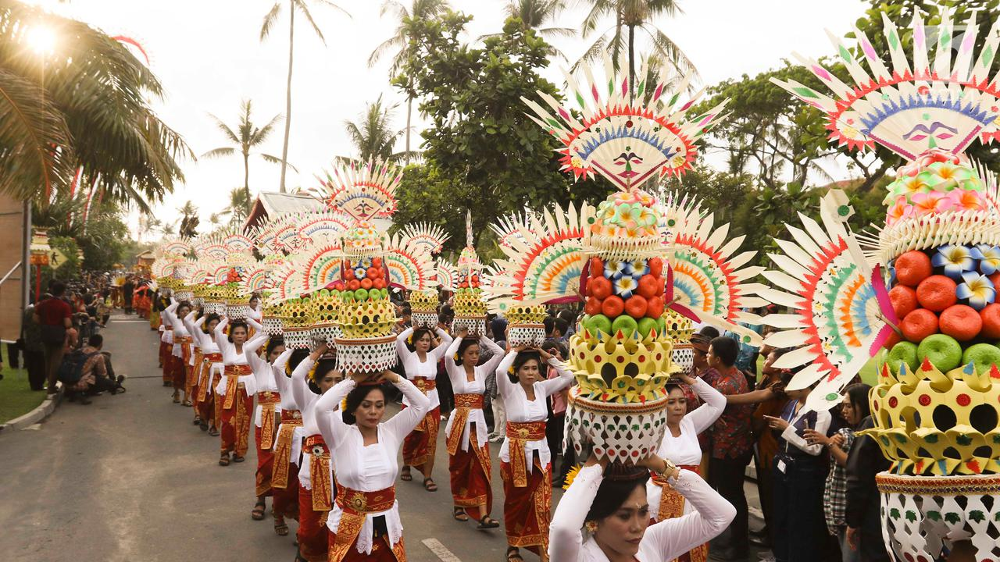
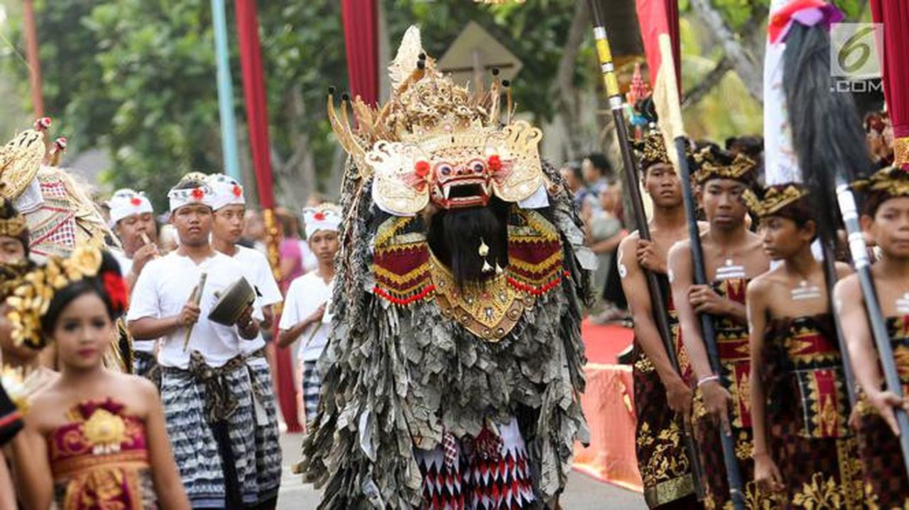

Diposting Oleh Merdeka.com, Arthur Gideon

Liputan6.com, Jakarta - Menteri Pariwisata Arief Yahya menyebutkan sektor pariwisata menunjukkan perkembangan yang positif dalam empat tahun terakhir. Bahkan pertumbuhan sektor pariwisata di Indonesia melampaui negara tetangga yaitu Malaysia.
Selain itu, sektor pariwisata juga bakal menjadi motor pembangunan nasional. Hal ini dibuktikan dengan pertumbuhan dan penerimaan devisa yang terus meningkat sejak 2015.
"Indonesia merupakan negara dengan pertumbuhan pariwisata tercepat nomor 9 di dunia, di Asia nomor 3 dan ASEAN nomor satu," kata Arief di Gedung Kementerian Sekretariat Negara, Jakarta, Selasa (23/10/2018).
Arief memaparkan, pertumbuhan pariwisata Indonesia Januari-Desember 2017 mencapai 22 persen. "Angka pertumbuhan ini di atas rata-rata pertumbuhan turisme dunia 6,4 persen, dan pertumbuhan ASEAN 7 persen," ujarnya.
Bahkan pertumbuhan sektor pariwisata di Indonesia melampaui negara tetangga yaitu Malaysia.
"Meski demikian, kenali musuhmu dan kenali dirimu. Vietnam tumbuh lebih baik mencapai 29 persen karena melakukan banyak deregulasi. Malaysia hanya tumbuh 4 persen. Begitu pula dengan Thailand," ujarnya.
========================================2 dari 3 Halaman======================================

Arief menerangkan, Presiden Joko Widodo (Jokowi) sejak awal menginginkan pariwisata menjadi penghasil devisa terbesar. Kini pariwisata sudah menjadi penyumbang devisa nasional nomor empat terbesar setelah industri kelapa sawit (CPO), migas, dan batu bara.
Sumbangan devisa dari sektor pariwisata meningkat sejak 2015 dari USD 122 miliar, pada 2016 menjadi USD 13,6 miliar dan pada tahun 2017 naik lagi menjadi USD 15 miliar.
Diharapkan pada tahun ini sektor pariwisata meraup devisa hingga USD 17 miliar. Sedangkan, proyeksi tahun 2019 sebesar USD 20 miliar.
Jumlah kunjungan wisatawan mancanegara terus melejit dari tahun 2015 sebanyak 9,7 juta, pada tahun 2016 menjadi 11,5 juta, tahun 2017 sebanyak 14 juta.
Adapun sampai Agustus 2018, jumlah turis asing sudah mencapai 10,58 juta dari target 17 juta wisman.
"Kunjungan pelancong Nusantara juga menunjukkan hal menggembirakan. Sejak tahun 2015 sebanyak 255 juta, tahun 2016 berkembang lagi menjadi 264 juta, dan tahun 2017 meningkat lagi menjadi 271 juta," tutupnya.